ЛенЗНИИЭП Госгражданстроя
ПОСОБИЕ
ПО ТЕПЛОТЕХНИЧЕСКОМУ РАСЧЕТУ
ИНВЕНТАРНЫХ ЗДАНИЙ (ПЕРЕДВИЖНЫХ
КОНТЕЙНЕРНЫХ И СБОРНО-РАЗБОРНЫХ)
(к СНиП II-3-79*)
Москва 1986
Ленинградский зональный научно-исследовательский
и проектный институт типового и проектирования
жилых и общественных зданий
(ЛенЗНИИЭП Госгражданстроя)
Утверждено
приказом по ЛенЗНИИЭП
от 19 марта 1984 г. № 69
Содержит требования к микроклимату инвентарных зданий различного функционального назначения. Изложены методы теплотехнических расчетов, способствующие оптимизации микроклимата и экономии топлива при эксплуатации зданий в экстремальных климатических условиях северных районов страны.
Для инженерно-технических работников проектных организаций.
ПРЕДИСЛОВИЕ
Интенсивное освоение северных регионов страны поставило перед строителями актуальную задачу проектирования и строительства зданий полной заводской готовности, пригодных для транспортировки в любые отдаленные районы и отвечающих современных требованиям, предъявляемым к среде обитания человека. Подобные здания - мобильные (инвентарные), - выпускаемые в настоящее время отечественной промышленностью, не всегда обладают необходимыми качествами, что в значительной мере связано с отсутствием специально разработанных для их проектирования документов. Действующие строительные нормы и правила создавались для проектирования традиционных многоэтажных зданий и поэтому не учитывают специфику мобильных (инвентарных домов): относительно большую площадь наружных ограждений, наличие продуваемого пространства под домом, повышенную герметичность и малую инерционность. Эти особенности необходимо учитывать при проектировании тепловой защиты зданий подобного типа.
Настоящее Пособие, содержащее необходимые дополнения к СНиП II-3-79** в части теплотехнического расчета мобильных (инвентарных) зданий, будет способствовать повышению качества проектирования зданий этого типа.
Пособие разработано ЛенЗНИИЭП (канд. техн. наук И.А. Казанцев, канд. биол. наук О.Е. Гаврилова, канд. техн. наук М.А. Еремеев, инженеры Л.Т. Бошнякович, Ж.А. Фершукова, А.Г. Рудинский, П.Н. Семенюк) при участии НИИСФ (кандидаты техн. наук А.П. Кротов, Л.К. Марков, М.А. Гуревич, Ю.А. Табунщиков), НИИСК (кандидаты техн. наук В.П. Хоменко, Г.Г. Варенюк), МНИИГ им. Ф.Ф. Эрисмана (кандидаты мед. наук И.С. Кирьянова и Т.К. Яньшина).
1. ОБЩИЕ ПОЛОЖЕНИЯ
1.1. Настоящее пособие распространяется на проектирование ограждающих конструкций контейнерных и сборно-разборных мобильных (инвентарных) зданий различного функционального назначения.
1.2. В целях сокращения потерь тепла в зимний период и поступлений тепла в летний период при проектировании мобильных (инвентарных) зданий и сооружений следует предусматривать:
а) объемно-планировочные решения с учетом обеспечения наименьшей площади ограждающих конструкций;
б) солнцезащиту световых проемов в соответствии с нормативной величиной коэффициента теплопропускания солнцезащитных устройств;
в) площадь световых проемов в соответствии с нормативным значением коэффициента естественной освещенности;
г) рациональное применение эффективных теплоизоляционных материалов;
д) уплотнение притворов и фальцев в заполнениях проемов и сопряжений элементов (швов) в наружных стенах и покрытиях.
1.3. Значение теплотехнических показателей строительных материалов, приведенные в прил. 3 СНиП II-3-79** для мобильных (инвентарных зданий северного исполнения принимаются по условиям «А» (кроме душевых и бань), для зданий обычного и южного исполнения - по условиям «Б».
1.4. При проектировании мобильных (инвентарных) зданий и сооружений следует предусматривать защиту внутренней и наружной поверхностей стен от воздействия влаги (производственной и бытовой) и атмосферных осадков с учетом материала стен, условий их эксплуатации и требований нормативных документов по проектированию отдельных видов зданий, сооружений и строительных конструкций.
2. РАСЧЕТНЫЕ ТЕПЛОТЕХНИЧЕСКИЕ ПАРАМЕТРЫ
2.1. При теплотехническом расчете наружных ограждающих конструкций отапливаемых мобильных (инвентарных) зданий температура наружного воздуха принимается для исполнения северного («С») - минус 20 °С.
2.2. Расчетные температуры внутреннего воздуха принимаются для жилых и общественных зданий - 22 °С, для производственных - 12 °С.
2.3. Суточные
колебания температуры внутреннего воздуха 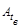
в жилых домах, детских и лечебно-профилактических учреждениях:
в зимний период + 1,5
в летний период + 2
в общественных зданиях прочего функционального назначения:
в зимний период + 2
в летний период + 3
2.4. Значение температурного перепада между температурой внутреннего воздуха и температурой внутренней поверхностей стен, указанное в СНиП II-3-79** (п. 2.2), в помещениях, имеющих более двух наружных ограждений, не считая пола, следует принимать на каждое дополнительное наружное ограждение для жилых домов, детских и лечебно-профилактических учреждений меньше на 1 °С; для общественных зданий прочего функционального назначения больше на 0,5 °С.
Примечание. При обогреваемых полах перепады между температурой внутреннего воздуха и температурой внутренних поверхностей стен допускается принимать на один градус больше.
Температура необогреваемого пола должна быть не ниже: в жилых домах, детских и лечебно-профилактических учреждениях - 17 °С; в общественных зданиях прочего функционального назначения - 16 °С. Расчетная температура поверхностей обогреваемого пола принимается равной 21 °С.
3. СОПРОТИВЛЕНИЕ ТЕПЛОПЕРЕДАЧЕ ОГРАЖДАЮЩИХ КОНСТРУКЦИЙ
3.1.
Сопротивление теплопередаче 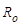 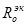
3.2. Требуемое
сопротивление теплопередаче 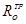
где n - коэффициент, принимаемый в зависимости от положения наружной поверхности ограждающих конструкций по отношению к наружному воздуху; при расчете ограждающих конструкций мобильных (инвентарных) зданий n - принимается равным 1; - расчетная температура внутреннего воздуха, принимаемая по п. 2.2 в соответствии с номенклатурой здания, °С; - расчетная зимняя температура наружного воздуха, принимаемая по п. 2.1 в соответствии с исполнением здания, °С; - нормативный температурный перепад между температурой внутреннего воздуха и температурой внутренней поверхности ограждающей конструкции, °С, принимаемый в соответствии с табл. 2, СНиП II-3-79** или п. 2.4; - коэффициент теплообмена на внутренней поверхности ограждающей конструкции, Вт/(м2×°С), определяемый для стен и потолка по формуле
где - коэффициент конвективного теплообмена, Вт/(м2×°С), определяемый по формуле
где - коэффициент, принимаемый равным
для стен - 2,44; для потолка - 3,26; - коэффициент
лучистого теплообмена, принимаемый равным 4,9 Вт/(м2×°С); 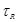
где 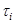 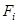
Температура внутренних поверхностей
ограждений, граничащих с отапливаемыми помещениям, принимается
равной температуре внутреннего воздуха см. п. 2.2, с неотапливаемыми -
на 2 °С ниже. Температура внутренней поверхности окна 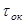
где 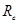 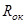
Примечание. При определении требуемого сопротивления теплопередаче конструкции пола принимается
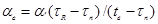
а определяется по формуле
3.3. Расчет ограждающих конструкций сборно-разборных мобильных (инвентарных) зданий следует производить по угловому помещению 1-го этажа.
Пример 1. Определить требуемое сопротивление теплопередаче наружных ограждающих конструкций одноэтажного сборно-разборного дома-общежития, предназначенного для эксплуатации в районах Севера (рис. 1).
Рис. 1. Схема инвентарного дома-общежития из блок-контейнеров
1 - хозблок; 2 - жилые блоки
Расчет производится для жилого блока.
Внутренние размеры помещения: длина - 5,6 м; ширина - 2,6
м; высота - 1 м. Остекление тройное м2×°С/Вт. Площади внутренних поверхностей ограждений: продольной
стены - 14,6 м2; торцевой (глухой) стены - 6,8
м2; торцевой стены (без учета площади окна) - 5,6 м2;
потолка и пола - 14,6 м2; окна - 1,2 м2.
Расчетные параметры 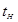 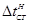
Принята следующая конструкция наружных ограждений. Стены и покрытия:
внутренний слой ДВП:
g = 800 кг/м3; l = 0,19 Вт/(м×°С); d = 0,006 м; S = 5,49 Вт/(м2×°С);
ДВП:
g = 200 кг/м3; l = 0,07 Вт/(м×°С); d = 0,01 м; S = 1,67 Вт/(м2×°С);
утеплитель-пенополистирол:
g = 40 кг/м3; l = 0,041 Вт/(м×°С); d -
определяется из условия обеспечения 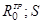
наружная обшивка - ДВП:
g = 800 кг/м3; l = 0,19 Вт/(м×°С); d = 0,006 м; S = 5,49 Вт/(м2×°С);
вагонка:
g = 500 кг/м3; l = 0,14 Вт/(м×°С); d = 0,013 м; S = 3,87 Вт/(м2×°С).
Наружная обшивка покрыта зеленой масляной краской (r = 0,6). Пол (необогреваемый):
линолеум: g = 1400 кг/м3; l = 0,23 Вт/(м×°С); d = 0,004 м; S = 5,87 Вт/(м2×°С);
ДСП: g = 600 кг/м3; l = 0,13 Вт/(м×°С); d = 0,02 м; S = 3,93 Вт/(м2×°С);
ДВП: g = 200 кг/м3; l = 0,07 Вт/(м×°С); d = 0,01 м; S = 1,67 Вт/(м2×°С);
утеплитель-пенополистирол:
g = 40 кг/м3; l = 0,041 Вт/(м×°С); d - определяется из условия обеспечения = 0,41 Вт/(м2×°С);
наружная обшивка - ДВП:
g = 800 кг/м3; l = 0,19 Вт/(м×°С); d = 0,006 м; S = 5,49 Вт/(м2×°С).
Расчет 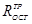 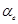
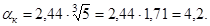
Затем по формуле (5) рассчитывается температура на внутренней поверхности наружных ограждений , °С
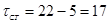
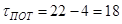
Температура поверхности окна tок, °С, определяется по формуле (6).
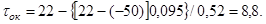
Определение радиационной температуры помещения относительно рассматриваемого ограждения производится по формуле (4)
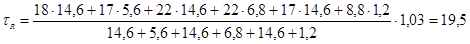
Далее по формуле (2) находится ав, Вт/(м2×°С)
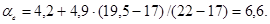
Тогда
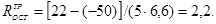
Расчет 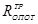
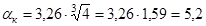
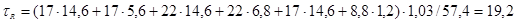
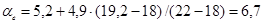
Тогда
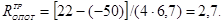
Расчет 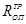
°С;
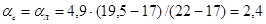
Тогда
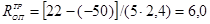
3.4. Расчет
приведенного сопротивления теплопередаче наружных ограждающих конструкций
мобильных (инвентарных) зданий 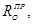
Тогда
где 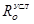
Наиболее существенным и постоянным для слоистых панельных ограждений является коэффициент , учитывающий влияние различных теплопроводных включений (обрамлений в стыках, ребер, вкладышей и т.д.), определяемый на основании экспериментальных данных или расчетов температурных полей по формуле
где 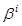
где 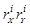
где 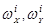 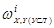 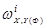
Если в панели теплопроводные включения представлены только ребрами каркаса, допустимо определять коэффициент по графику (рис. 2) в зависимости от относительной площади каркаса (по внутренней поверхности конструкции) и отношения коэффициентов теплопроводности материалов утеплителя и каркаса .
Рис. 2. График для определения коэффициента при равном: 1 - 0,4; 2 - 0,3; 3 - 0,2
Для неоднородных ребер каркаса следует определять по формуле
где  - толщина панели, м; - термическое сопротивление каркаса, определяемое по формуле (5) СНиП II-3-79**.
- толщина панели, м; - термическое сопротивление каркаса, определяемое по формуле (5) СНиП II-3-79**.
Коэффициент , учитывающий влияние воздухопроницаемости на понижение общего уровня теплозащиты ограждения, определяется по формуле
где - сопротивление теплопередаче ограждения с учетом понижения его за счет переноса тепла фильтрующимся через ограждение воздухом, м×°С/Вт; - количество тепла, переносимое через места ограждения без теплопроводных включений, Вт/м2, определяемое по формуле
где - расчетная температура внутреннего и наружного воздуха, °С; - количество тепла, переносимое фильтрующимся воздухом через ограждения, Вт/м2, определяемое по формуле
где G - расход воздуха через ограждения, кг/(м2·ч), определяемый в соответствии с разд. 5 СНиП II-3-79** либо в соответствии с другими нормативными документами; cp - средняя теплоемкость воздуха при постоянном давлении, равная 1,005 кДж/(кг·°С); - коэффициент, учитывающий неравномерность и влияние встречного теплового потока, равный 0,6 (СНиП II-3-75*, табл. 3).
Коэффициент r3, учитывающий снижения уровня теплозащиты за счет внутренней конвекции воздуха в трехслойных ограждающих конструкциях с вентилируемыми воздушными прослойками и воздухопроницаемым утеплителем, определяется по формуле
где - сопротивление теплопередаче с учетом понижения его за счет внутренней конвекции воздуха в панели от одной поверхности ограждения к другой:
где Н - высота панели, м; Rh - сопротивление воздухопроницанию утеплителя, м2·ч·Па/кг, (принимается по прил. СНиП II-3-79** или определяется экспериментально); - удельный вес воздуха, Н/м3, соответственно во внутренней и наружной воздушных прослойках, определяется по формуле (31) СНиП II-3-79*, t1, t2 - средние температуры воздуха, °С, соответственно во внутренней и наружной воздушных прослойках, определяемые по формулам:
где - термическое сопротивление слоев от внутренней и наружной поверхности ограждения до воздушной прослойки, м2·°С/Вт; к - коэффициент, учитывающий особенности действия воздушной прослойки, образованной вертикально расположенным профилированным листом с высотой складки не менее 10 мм, определяется по формуле:
где a - ширина удаленной от утеплителя полки профилированного листа, мм; b - ширина прилегающей к утеплителю полки профилированного листа, мм; l - шаг складки профилированного листа, мм.
Пример 2. Определить приведенное сопротивление теплопередаче стены с окном мобильного (инвентарного) здания. Расчетная температура наружного воздуха tн = -50 °С, внутреннего tВ = 18 °С. Режим Б. Длина стены В = 5,5 м, высота Н = 2,8 м, размер окна 1,2´1 м. Каркас панели деревянный, наружная облицовка - гофрированный металл, внутренняя - гофрированный фибролит с шагом складки l = 200 мм, высотой h = 30 мм и шириной полок, удаленной от утеплителя a = 40 мм, прилегающей к утеплителю b = 100 мм.
Утеплитель - минвата: плотность = 50 кг/м3, толщина d = 100 мм; коэффициент теплопроводности = 0,6 Вт/(м×°С), сопротивление теплопередаче = 0,5 м2×°С/Вт. Требуемое сопротивление теплопередаче = 130 м2×°С/Вт, сопротивление теплопередаче по полю, панели = 1,83 м2×°С/Вт, сопротивление теплопередаче окна ROK = 0,34 м2×°С/Вт. Воздухопроницаемость панели G = 0,5 кг/(м2×ч).
Рассчитываем коэффициент r1, учитывающий влияние теплопроводных включений, по формулам (9) - (13).
Для этого рассчитываем площади эпюр распределения температуры на внутренней поверхности участков (а, б, в, г) w, м×°С панели по сечениям (рис. 3).
Рис. 3. Распределение температуры на внутренней поверхности панели по ее сечениям
1. По вертикальным сечениям ось х-х:
площади базовых эпюр температурного поля отдельных участков
,
,
,
;
условные площади эпюр температурного поля отдельных участков (без учета теплопроводных включений)
,
,
,
;
фактические площади эпюр температурного поля отдельных участков
,
,
,
.
2. По горизонтальным сечениям ось y-y:
площади базовых эпюр температурного поля отдельных участков
,
,
,
;
условные площади эпюр температурного поля отдельных участков (без учета теплопроводных включений)
,
,
,
;
фактические площади эпюр температурного поля отдельных участков
,
,
;
;
,
,
;
,
,
,
;
;
,
,
,
;
;
.
3. Рассчитываем по формулам (11) - (12) коэффициент приведения по вертикальному и горизонтальному сечениям участка «а»
,
.
4. Рассчитываем по формуле (13) коэффициент
.
5. Рассчитываем по формуле (10) коэффициент приведения для участка «а»
.
Аналогичным образом рассчитывались . Полученные результаты представлены в табл. 1.
|
Показатель |
Участки панели (рис. 3) |
||||
|
а |
б |
в |
г |
||
|
1. |
Площади участков, м2 |
8,4 |
4,2 |
0,6 |
1 |
|
2. |
Отношение площади участка к площади панели |
0,59 |
0,3 |
0,04 |
0,07 |
|
3. |
Площади эпюр распределения температуры на внутренней поверхности участков, w, м×°С, по сечения: |
|
|
|
|
|
вертикальному |
|
|
|
|
|
|
|
50,4 |
50,4 |
10,8 |
18 |
|
|
|
38,64 |
38,64 |
6,96 |
13,2 |
|
|
|
36,4 |
36,4 |
5,8 |
11,02 |
|
|
горизонтальному |
|
|
|
|
|
|
|
54 |
27 |
18 |
18 |
|
|
|
41,4 |
20,7 |
11,6 |
13,8 |
|
|
|
39,21 |
18,42 |
10,64 |
11,96 |
|
|
4. |
Коэффициенты приведения по вертикальным и горизонтальным сечения участка |
|
|
|
|
|
|
0,84 |
0,84 |
0,77 |
0,69 |
|
|
|
0,85 |
0,73 |
0,87 |
0,7 |
|
|
5. |
Коэффициент |
1,18 |
1,31 |
1,24 |
1,43 |
|
6. |
Коэффициент приведения для всего участка |
0,84 |
0,80 |
0,83 |
0,69 |
Рассчитаем по формуле (9) общий коэффициент приведения r1, учитывающий теплопроводные включения
.
Рассчитываем по формулам (15) - (17) коэффициент r2, учитывающий влияние воздухопроницаемости на общий уровень теплозащиты ограждения
.
Рассчитываем по формулам (18) - (22) коэффициент r3, учитывающий влияние на общий уровень теплозащиты внутренней конвекции воздуха в трехслойных ограждающих конструкциях с вентилируемыми воздушными прослойками и воздухопроницаемым утеплителем. Для этого по формулам (20) и (21) предварительно рассчитываем средние температуры воздуха во внутренней t1 и наружной t2 воздушных прослойках
°С,
°С.
Определяем удельный вес воздуха и соответственно внутренней и наружной воздушных прослоек [формула (31) СНиП II-3-79**]
Н/м3,
Н/м3.
Рассчитываем коэффициент к по формуле (22)
Рассчитываем количество тепла, переносимого за счет внутренней конвекции воздуха от одной поверхности панели к другой, , Вт/м2, по формуле (19)
Определяем общий коэффициент приведения сопротивления теплопередаче стеновой панели по глухой части r
.
Рассчитываем по формуле (8) приведенное сопротивление теплопередаче стеновой панели по глухой части , м2×°С/Вт
Увеличим толщину утеплителя до 160 мм, тогда
м2×°С.
Рассчитываем . Коэффициент r1 примем без изменения, т.е.
.
Для определения рассчитываем
м2×ч×Па/кг;
°С;
°С;
Н/м3;
Н/м3;
Вт/м2;
;
;
м2×°С/Вт.
Следовательно, приведенное сопротивление теплопередаче стеновой панели по глухой части соответствует м2×°С/Вт.
3.5. Толщину слоя утеплителя , м, ограждающей конструкции с последовательно расположенными однородными слоями следует определять по формуле
где - сумма термических сопротивлений конструктивных слоев ограждений, м2×°С/Вт; - коэффициент теплопроводности утеплителя, Вт/(м×°С).
В случае неоднородной или воздухопроницаемой ограждающей конструкции следует определять по формуле
3.6. Температура внутренней поверхности ограждающей конструкции по теплопроводному включению должна быть не ниже температуры точки росы внутреннего воздуха при расчетной зимней температуре наружного воздуха.
Примечание. Относительную влажность внутреннего воздуха для определения температуры точки росы в местах теплопроводных включений ограждающих конструкций жилых и общественных зданий следует принимать: для исполнения «С» - 40 %, для исполнения «О» и «Ю» - 50 %.
3.7. Температуру внутренней поверхности , °С, ограждающей конструкции следует определять согласно п. 2.11* СНиП II-3-79**. Температуру внутренней поверхности стальных облицовок в зоне сквозных стальных болтов допускается определять по формуле (13) СНиП II-3-79**, т.е.
где - сопротивление теплопередаче ограждающей конструкции, м2×°С/Вт, в зоне сквозных стальных болтов, определяемое по формуле (4) СНиП II-3-79**; - коэффициент, принимаемый по табл. 2.
|
Схема установки болтов (рис. 4) |
Коэффициент при диаметре болта, мм |
|||||
|
8 |
10 |
12 |
16 |
20 |
||
|
50 |
|
0,234 0,14 0,08 |
0,348 0,18 0,12 |
0,46 0,248 0,158 |
0,68 0,345 0,246 |
0,9 0,445 0,325 |
|
80 |
|
0,27 0,145 0,096 |
0,325 0,175 0,12 |
0,38 0,202 0,14 |
0,485 0,262 0,183 |
0,595 0,32 0,225 |
|
100 |
|
0,263 0,149 0,104 |
0,306 0,162 0,118 |
0,346 0,193 0,134 |
0,431 0,238 0,165 |
0,515 0,283 0,196 |
|
120 |
|
0,24 0,152 0,107 |
0,28 0,17 0,117 |
0,32 0,187 0,13 |
0,39 0,222 0,153 |
0,465 0,258 0,176 |
3.8. Температуру внутренней поверхности ограждения в зоне угловых стыков следует определять на основании расчета температур на ЭВМ или экспериментально. Эту температуру возможно также определять по формуле
где - температура внутренней поверхности, °С, одного из стыкуемых ограждений вне зоны теплопроводных включений, для расчета принимается температура ограждения с наименьшим термическим сопротивлением, рассчитываемая по формуле
 - безразмерный коэффициент,
определяемый по графику (рис. 5) в зависимости от отношения коэффициента
теплопроводности материалов конструкции углового стыка , который
рассчитывается по формуле
- безразмерный коэффициент,
определяемый по графику (рис. 5) в зависимости от отношения коэффициента
теплопроводности материалов конструкции углового стыка , который
рассчитывается по формуле
где и - толщины стыкуемых ограждений, м; и - приведенные полные термические сопротивления конструкции углового стыка в двух взаимно перпендикулярных направлениях Х и У, °С/Вт, определяемые по формуле
Значения и определяются следующим образом. Для определения рассматриваемая область стыка условно рассекается плоскостями, параллельными направлению Х или У, на минимальное количество n участков с последовательно чередующимися однородными слоями.
Рис. 4. Схема установки болтов
Рис. 5. График для определения параметра
Для каждого i-го участка, состоящего из m слоев, вычисляется его термическое сопротивление
где Fi - площадь сечения i-го участка, м2, длина которого для удобства расчетов принимается равной 1 м; - соответственно коэффициент теплопроводности, Вт/(м2×°С), и толщина, м, j-го слоя в участке.
Значение определяется по формуле
Для определения рассматриваемая область условно рассекается плоскостями, перпендикулярными направлению Х или У, на минимальное количество к участков с последовательно чередующимися однородными слоями.
Для каждого i-го участка, состоящего из l слоев, вычисляется его термическое сопротивление
где - соответственно площадь сечения, м2, и коэффициент теплопроводности, Вт/(м×°С), j-го слоя в участке.
Значение определяется по формуле
Пример 3. Требуется рассчитать температуру в угловом соединении стены и пола. Поперечный разрез углового соединения показан на рис. 6. Принимаем = -50 °C; = 22 °C.
Рис. 6. Поперечный разрез углового соединения панелей стены и пола (а) и его расчетная схема (б)
Вт/(м×°С).
Рассчитываем приведенный коэффициент теплопроводности в зоне углового стыка длиной в 1 м (область ABCD). При этом площади сечения Fi, через которые проходит тепловой поток, численно равны соответствующих участков. Для простоты расчета не учитываем влияние гвоздей, шурупов и выступающей части швеллера. Расчетная область показана на рис. 6б.
Рассчитываем Rax. Для этого зону ABCD (см. рис. 6б) условно рассекаем на параллельные оси Х участки I - VII и определяем их термические сопротивления , °С/Вт, по формуле (32)
Рассчитаем по формуле (33) , °С/Вт
Далее определяем . Для этого условно рассекаем область ABCD на участки 1 - 7, перпендикулярные направлению оси Х, и определяем по формуле (34) их термические сопротивления , °С/Вт
Рассчитываем , °С/Вт, по формуле (35)
Рассчитываем , °С/Вт, по формуле (31)
Приведенный коэффициент теплопроводности в направлении оси Х , Вт/(м×°С), по формуле (29) равен:
аналогично в направлении оси У получим
По формуле (28) рассчитываем приведенное значение , ВТ/(м×°С)
Определяем отношение коэффициентов теплопроводности утеплителя и углового стыка
Из графика (см. рис. 5) находим
Расчет , м2×°С/Вт, производится по формулам (3) - (5) СНиП II-3-79**
Далее по формуле (27) определяем значение температуры поверхности стены , °С вне зон теплопроводных включений
Температуру в угловом соединении стены и пола , °С рассчитываем по формуле (26)
Следовательно, температура в угловом соединении стены и пола будет отвечать требованиям невыпадения конденсата при относительной влажности воздуха помещения £ 55 %.
3.9. Требуемое сопротивление теплопередаче заполнений световых проемов (окон), следует принимать по табл. 3.
|
Исполнение |
Требуемое сопротивление теплопередаче заполнений оконных проемов, , м2×°С/Вт |
|
|
1. Жилые дома, детские и лечебно-профилактические учреждения |
«С» «О» «Ю» |
0,53 0,53 0,39 |
|
2. Общественные здания, кроме указанных в п. 1 |
«С» «О» «Ю» |
0,48 0,48 0,31 |
|
3. Производственные здания |
«С» «О» «Ю» |
0,34 0,34 0,31 |
3.10. Приведенное сопротивление теплопередаче заполнений световых проемов (окон) следует принимать по прил. 6* СНиП II-3-79**.
4. ТЕПЛОУСТОЙЧИВОСТЬ ЗДАНИЙ
4.1. Проверка теплоустойчивости помещений производится из условия обеспечения в нем нормативного уровня амплитуды колебания температуры внутреннего воздуха (п. 2.3).
4.2. Амплитуду колебаний температуры внутреннего воздуха , °С, для зимнего периода года следует определять по формуле
где - амплитуда суточных колебаний температуры наружного воздуха, °С, принимаемая независимо от исполнения инвентарных зданий равной 5 °С; m - коэффициент неравномерности отдачи тепла отопительными приборами, принимается равным: при наличии электроотопления (без системы автоматического регулирования) - 0,05; при центральном отоплении - 0,1; при печном - 0,5; tB - расчетная температура внутреннего воздуха помещения, °С, принимаемая по п. 2.2; - расчетная зимняя температура наружного воздуха, °С, принимаемая по п. 2.1; - средневзвешенное значение сопротивления теплопередаче ограждающих конструкций, м2×°С/Вт, следует определять по формуле
где - соответственно значения сопротивлений теплопередаче, м2×°С/Вт, и площади внутренних поверхностей наружных ограждений, м2; - коэффициент теплопоглощения поверхностей внутренних ограждений (перегородок), Вт/( м2×°С), следует применять равным коэффициенту теплоусвоения внутренней поверхности ограждения, УВ, Вт/( м2×°С), значения которого рассчитываются следующим образом:
если первый слой ограждения, обращенный в помещение, имеет величину характеристики тепловой инерции
то , где S1 - коэффициент теплоусвоения материала первого слоя, Вт/(м2×°С) [см. СНиП II-3-79*; (прил. 3)]; R1 - термическое сопротивление первого слоя, м2×°С/ Вт; рассчитывается по формуле (3) СНиП II-3-79**,
если первый слой имеет D1 < 1, но ( - характеристика тепловой инерции второго слоя), то величину УВ вычисляют по формуле
где - коэффициент теплоусвоения материала второго слоя, Вт/( м2×°С);
если первые n слоев конструкции () имеют суммарную тепловую инерцию , но тепловая инерция n + 1 слоев , то величину УВ следует определять, начиная с -го слоя конструкции:
для -го слоя
для -го слоя ()
- площади поверхностей внутренних ограждений, м2; BН - коэффициент теплопоглощения внутренних поверхностей наружных ограждений, Вт/(м2×°С); для стен и потолка определяется по формуле
где - коэффициент конвективного теплообмена, Вт/(м2×°С).
Коэффициент теплопоглощения поверхности пола следует принимать равным коэффициенту теплоусвоения пола .
Коэффициент теплопоглощения окна , Вт/(м2×°С), следует определять по формуле
где - сопротивление теплопередаче окна м2×°С/Вт, (см. прил. 6 СНиП II-3-79**; - удельная теплоемкость материала мебели, кДж/(кг×°С) (см. СНиП II-3-79**, прил. 3); - масса мебели, кг. При отсутствии проектных данных о мебели ее масса для жилой комнаты принимается равной 200 кг, а удельная теплоемкость - 2,3 кДж/(кг×°С).
4.3. Величина ожидаемой амплитуды колебаний температуры воздуха помещения в летний период эксплуатации определяется по формуле
где - максимальная амплитуда суточных колебаний температуры наружного воздуха в июле, принимаемая для зданий всех исполнений равной 10 °С; - коэффициент поглощения солнечной радиации наружной поверхностью ограждения (см. СНиП II-3-79**, прил. 7); - амплитуда эквивалентной температуры солнечного облучения, принимаемая для зданий всех исполнений равной 20 °С.
4.4. Если величина ожидаемой амплитуды колебаний температуры внутреннего воздуха окажется выше нормативных значений (см. п. 2.3), то в этом случае следует: принять большее значение термического сопротивления наружных ограждений или увеличить теплоаккумулирующую способность помещения за счет увеличения толщины внутренних теплоемких слоев ограждения или применения более плотных материалов внутренней обшивки, или предусмотреть автоматическое регулирование температуры воздуха помещений.
Пример 4. Требуется проверить теплоустойчивость жилого помещения дома-общежития, описание которого приводится в примере 1. Для этого рассчитывается по формулам (36) и (44) амплитуда колебания внутреннего воздуха , ожидаемая в зимний и летний периоды года.
Расчетные параметры для зимнего для
зимнего периода: = -50 °С; =
22 °С;  = 0,05 (электроотопление без системы автоматического регулирования
температуры воздуха помещения).
= 0,05 (электроотопление без системы автоматического регулирования
температуры воздуха помещения).
Сопротивление теплопередаче наружных ограждающих конструкций , м2×°С/Вт, (см. пример 1): стен - 2,2, потолка - 2,7, пола - 6,0, окна - 0,52. Масса мебели принимается равной 200 кг, изготовлена мебель из ДВП (С = 2,3 кДж/(кг×°С)).
Для расчета прежде всего определяется средневзвешенная величина из значений сопротивления теплопередаче отдельных ограждающих конструкций [см. формулу (37)].
Затем, чтобы определить коэффициенты теплопоглощения и внутренних поверхностей внутренних и наружных ограждающих конструкций, необходимо для каждого слоя рассчитать термическое сопротивление , м2×°С/Вт, [см. формулу (3) СНиП II-3-79**], тепловую инерцию [см. формулу (38)] и коэффициент теплоусвоения внутренней поверхности ограждения , Вт/(м2×°С), по формулам (39) - (41).
Стены внутренние:
ДВП твердая
ДВП мягкая
Пенополистирол
Следовательно расчет У начинаем со 2-го слоя
Тогда
Поскольку для внутренних ограждений
Вт/°С.
Стены наружные: Вт/(м2×°С), так как конструкция внутренних и наружных стен одинакова; Вт/(м2×°С) - см. пример 1;
Вт/(м2×°С);
Вт/°С.
Потолок: Вт/(м2×°С) - см. пример 1; Вт/(м2×°С) (конструкция стен и потолка одна и та же).
Вт/(м2×°С);
Вт/°С.
Окно:
Вт/(м2×°С);
Вт/°С.
Пол:
линолеум
м2×°С/Вт;
ДСП
м2×°С/Вт;
ДВП
м2×°С/Вт;
Пенополистирол
м2×°С/ Вт;
Следовательно, расчет У, Вт/(м2×°С), начинаем с 3-го слоя
Вт/°С;
°С.
Для летних условий определяется по формуле (44) (см. СНиП II-3-79**, прил. 7).
- те же, что и в расчете для зимних условий;
°С.
Таким образом расчет показал, что для зданий условий °С, а для летних условий °С.
Следовательно принятая конструкция здания удовлетворяет требованиям теплоустойчивости, так как ожидаемая при расчетных условиях амплитуда колебаний температуры воздуха помещения в зимний и летний периоды не превышает нормативного уровня (см. п. 2.3).
5. ТЕПЛОТЕХНИЧЕСКИЕ ТРЕБОВАНИЯ К КОНСТРУКЦИИ ПОЛА
5.1. Показатель теплоусвоения , Вт/(м2×°С) поверхности пола в мобильных (инвентарных) зданиях не должен превышать следующих значений:
для жилых домов, детских и лечебно-профилактических учреждений 10
для общественных зданий прочего функционального назначения 12
для отапливаемых помещений производственных зданий с
постоянным пребыванием людей на рабочих местах 14
5.2. Показатель теплоусвоения поверхности пола, , Вт/(м2×°С), следует определять следующим образом:
а) если покрытие (первый слой конструкции пола) имеет тепловую инерцию
б) если покрытие пола имеет тепловую инерцию , но тепловая инерция первых двух слоев
в) если первые n слоев конструкции пола (n ³ 2) имеет суммарную тепловую инерцию , но тепловая инерция n + 1 слоев, , то:
1) вычисляем показатель теплоусвоения наружной поверхности n-го слоя по формуле
2) вычисляем коэффициенты теплоусвоения наружной поверхности i-тых слоев по формуле
для
3) принимаем равным показателю теплоусвоения наружной поверхности 1-го слоя
- термические сопротивления соответственно 1-го, n-го и i-го слоев пола, м2×°С/Вт, определяемые по формуле (3) СНиП II-3-79*;
- коэффициенты теплоусвоения материала соответственно 1-го, 2-го, n-го, (n + 1)-го, i-го слоев пола, Вт/(м2×°С), принимаемые по прил. 3 СНиП II-3-79**; - показатель теплоусвоения наружной поверхности (i + 1)-го слоя пола, Вт/(м2×°С).
Пример 5. Определить показатель теплоусвоения пола , конструкция и теплотехническая характеристика материалов которого приведены в примере 1.
Линолеум
м2×°С/Вт;
ДСП
м2×°С/ Вт;
Тогда по формуле (46)
Вт/(м2×°С).
Следовательно, конструкция пола удовлетворяет предъявленным к ней требованиям, так как Вт/(м2×°С) < Вт/(м2×°С) п. 5.1.
5.3. Для обеспечения оптимальной температуры поверхности пола в помещениях жилых домов, детских и лечебно-профилактических учреждениях необходимо предусматривать искусственный обогрев полов.
5.4. Расчетную температуру поверхности обогреваемого пола следует принимать 21 °С.
5.5. Для обогрева полов могут быть использованы горячая вода, теплый воздух или электроэнергия. Выбор теплоносителя в каждом отдельном случае должен производиться на основе технико-экономических обоснований и расчетов.
При проектировании теплых полов необходимо исходить из того, что главной целью обогрева полов является поддержание оптимальной для человека температуры на их поверхности, а не компенсация общих теплопотерь помещением. При этом сопротивление теплопередаче конструкции обогреваемого пола во избежание больших теплопотерь через его конструкцию, а также на случай аварийного отключения, системы обогрева пола должно быть не менее: для исполнения «С» - 4,5 м2×°С/Вт; «О» - 3,5 м2×°С/Вт; «Ю» - 3,0 м2×°С/Вт.
6. ВОЗДУХОПРОНИЦАЕМОСТЬ ЗДАНИЙ
6.1. Нормативную воздухопроницаемость , кг/(м2×ч), ограждающих конструкций зданий и сооружений следует принимать по табл. 12 СНиП II-3-79**. При этом суммарный расход воздуха через все ограждающие конструкции G не должны превышать утроенного внутреннего объема здания , т.е. должно выполняться требование .
6.2. Суммарный расход воздуха через все ограждающие конструкции G, м2/ч, при расчетной разности давлений воздуха на наружных и внутренних поверхностях ограждающих конструкций (СНиП II-3-79**, п. 5.2) определяется по формуле
где и - соответственно нормативная воздухопроницаемость, кг/(м2×ч) и площадь, м2, наружных ограждений, окон и дверей; и - соответственно нормативная воздухопроницаемость, кг/(м×ч), и длина, м, стыков между панелями наружных ограждений, - удельный вес воздуха, Н/м3, определяемый по формуле (31) СНиП II-3-79** при температуре воздуха, равной среднему значению между расчетными и .
6.3. В том случае, если , то следует предусмотреть дополнительные мероприятия по уменьшению общей воздухопроницаемости (уменьшение общей длины рядовых стыковых соединений между панелями ограждений, введение большого количества глухих стен, применение материалов обшивок с большим сопротивлением воздухопроницанию и т.п.).
Пример 6. Определить, удовлетворяет ли проектируемый блок-контейнер требованиям, предъявляемым к воздухопроницаемости зданий данного типа.
Исполнение - северное: °С; °С. Внутренние габариты здания: м. Здание имеет одно окно ( м2) и одну входную дверь ( м2). Стыковые соединения имеются только в местах соединения стеновых панелей.
1. Определяем допустимое значение воздухопроницаемости рассматриваемого здания (п. 6.1)
м3,
м3/ч.
2. Далее по формуле (49) определим суммарный расход воздуха через ограждающие конструкции и их элементы G, м3/ч.
Внутренняя площадь наружных ограждений , м2, за вычетом окна и двери:
Длина стыков l, м:
горизонтальных
вертикальных
общая длина
Нормативная воздухопроницаемость (СНиП II-3-79**, п. 5.3):
для ограждений кг/(м2×°С);
для окна кг/(м2×°С);
для двери кг/(м2×°С);
для стыков кг/(м×ч).
Н/м3;
м3/ч.
3. Здание удовлетворяет требованиям, предъявляемым к его воздухопроницаемости, так как
7. СОПРОТИВЛЕНИЕ ПАРОПРОНИЦАНИЮ ОГРАЖДАЮЩИХ КОНСТРУКЦИЙ
7.1. Влажностный режим конструкции существенным образом влияет на ее теплозащитные качества и зависит от температуры внутреннего воздуха, паропроницаемости используемых в конструкции материалов, конструктивного решения ограждений и расположения в нем пароизоляционных и теплоизоляционных слоев.
7.2. Сопротивление паропроницанию внутреннего защитного слоя конструкции из условий недопустимости систематического накопления влаги в ограждении в течение годового периода эксплуатации здания и ограничения накопления влаги в ограждении за период с отрицательными температурами наружного воздуха должно быть не менее 4 м2×ч×Па/мг.
7.3. Необходимую парозащиту, ограничивающую поступление пара из помещения внутрь ограждения, создает внутренний защитный слой конструкции (внутренняя обшивка, пароизоляция), сопротивление паропроницанию которого рассчитывается как сумма сопротивлений паропроницанию составляющих его слоев
Сопротивление паропроницанию , м2×ч×Па/мг, отдельных слоев вычисляется по формуле
где d - толщина слоя материала, м; m - коэффициент паропроницаемости материала, мг/(м×ч×Па), принимаемый по прил. 3 СНиП II-3-79**.
7.4. Указанное сопротивление паропроницанию внутреннего слоя конструкции может быть получено покрытием внутренней обшивки ограждения (со стороны примыкания к утеплителю) различными лаками или установкой слоя пароизоляции из полиэтиленовой пленки на границе внутренней обшивки и утеплителя.
7.5. Перечень основных материалов, используемых в инвентарном домостроении в качестве обшивочных и пароизоляционных материалов приведен в табл. 4.
7.6. Для обеспечения качественной пароизоляции ограждения необходимо предусматривать тщательную герметизацию швов внутренней обшивки и непрерывность пароизоляционного слоя.
Пример 7. В рассматриваемой ранее конструкции стеновой панели (см. пример 1) в качестве внутренней обшивки применена древесно-волокнистая плита толщиной 6 мм ( мг/(м×ч×Па). Требуется оценить влажностный режим конструкции.
Сопротивление паропроницанию внутренней обшивки по формуле (51) составляет
м2×ч×Па/мг,
что значительно меньше м2×ч×Па/мг. Следовательно, в ограждающей конструкции будет происходить систематическое ежегодное накопление влаги, что приведет к намоканию мягкой ДВП и значительному сосредоточению влаги в период влагонакопления на границе пенополистирола и наружной обшивки. В данной конструкции необходима пароизоляция из полиэтиленовой пленки (сопротивление паропроницанию 7,3 м2×ч×Па/мг), которая должна быть установлена на границе внутренней обшивки и мягкой ДВП.
|
|
Толщина слоя, мм |
RП, м2×ч×Па/мг |
|
Картон обыкновенный |
1,3 |
0,016 |
|
Листы асбестоцементные |
6 |
0,3 |
|
Листы гипсовые обшивочные (сухая штукатурка) |
10 |
0,12 |
|
Плиты древесноволокнистые и древесно-стружечные (ГОСТ 4598-74, ГОСТ 10632-77), g = 600 - 1000 кг/м3 |
10 |
0,079 - 0,084 |
|
Плиты древесно-волокнистые твердые |
10 |
0,11 |
|
Фанера клееная трехслойная (ГОСТ 3916-69) |
3 |
0,23 |
|
Алюминий (ГОСТ 22233-76) |
- |
- |
|
Полиэтиленовая пленка |
0,16 |
7,3 |
|
Рубероид одинарный |
1,5 |
1,1 |
|
Покрытие поливинилхлоридным лаком за два раза |
- |
3,87 |
|
Покрытие хлоркаучуковым лаком за два раза |
- |
3,47 |
|
Толь кровельный |
1,9 |
0,4 |
|
Окраска масляная за 2 раза со шпаклевкой и грунтовкой |
- |
0,64 |
|
Окраска эмалевой краской |
- |
0,48 |
СОДЕРЖАНИЕ
|
2. Расчетные теплотехнические параметры.. 2 3. Сопротивление теплопередаче ограждающих конструкций. 3 5. Теплотехнические требования к конструкции пола. 24 |